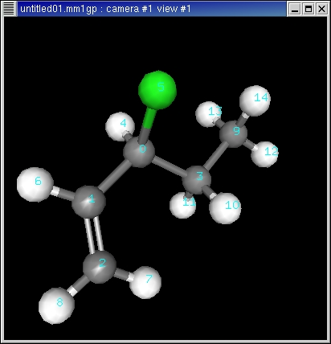
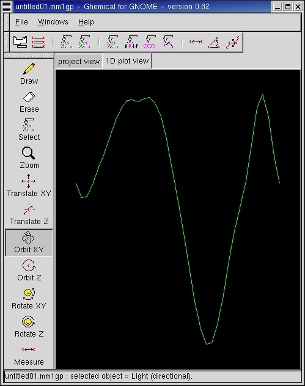
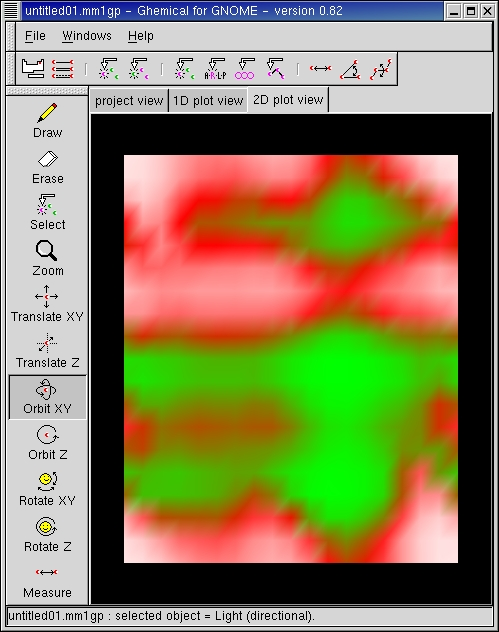
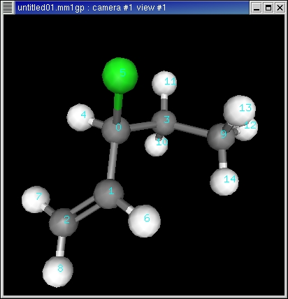

For studying molecular structures and their energies in detail, it is possible to calculate plots that show how energy is dependent on torsion angles of a molecule. We will get 1D or 2D plots depending on whether we use 1 or 2 torsion angles as variables.
We use 3-chloro-1-pentene as our example molecule:

We have selected from the popup-menu "Render->Rendering Mode->Label Index" to make the atom index numbering visible, and also "Render->Views->Attach/Detach This View" in order to make the graphics view and the plot view visible simultaneously.
Now we need to define the bonds (or more precisely, the torsions) which we wish to rotate. For the first torsion we select atoms 2-1-0-3, and for the second torsion we select atoms 1-0-3-9. The direction in which we select the torsion is not relevant, but the sequence itself must be correct.
Now let's create a 1D plot that displays the energy vs. the first torsion,
using AM1 to compute final energies. From the pop-up menu we select "Compute->Plot
Energy vs. 1 Torsion Angle...". The following default command
string is then displayed:
make_plot1 A B C D 36 0.0 360.0 250
The letters A-D represent the atom indices, that we have to replace using
our values 2-1-0-3 determined above. If we wish to calculate the final energies
with AM1, we also append the values "2 0" to the end (2 tells that the method
is AM1, and 0 tells the total charge to be used in the calculation):
make_plot1 2 1 0 3 36 0.0 360.0 250 2
0
The resulting 1D energy plot is the following:

If the plot is clicked using the Orbit-XY mouse tool, it will display the structure in graphics view window and print out the energy at the console window.
Now let's try the 2D plot, using both first and second torsion angles
as variables. Again we select from the pop-up menu "Compute->Plot
Energy vs. 2 Torsion Angle...", and type in the following changes
to the default command string:
make_plot2 A B C D 36 0.0 360.0 I J K L 36 0.0 360.0
250
Since our torsions are 2-1-0-3 and 1-0-3-9 and we wish to use AM1 we will
make the following modifications:
make_plot2 2 1 0 3 36 0.0 360.0 1 0
3 9 36 0.0 360.0 250 2 0
The resulting 2D energy plot is the following:

In the above plot, X-axis is the first torsion angle, and the Y-axis is the second torsion angle. The colours of the plot indicate the energy; green colour means low energy and red/white colour means high energy.
Just like in the 1D plot, the structure is displayed if the the plot is
clicked using the Orbit-XY mouse tool. In addition, the Zoom mouse tool
changes the colour scaling of the plot, making it easier to find the desired
details from the plot. The following is the same plot as above, but using
colour scaling that better shows the lowest-energy conformations:
Following is one of the most probable conformations of 3-chloro-1-pentene according to the above plot:
